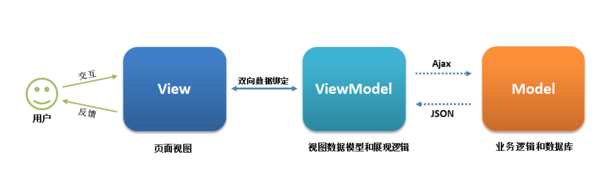
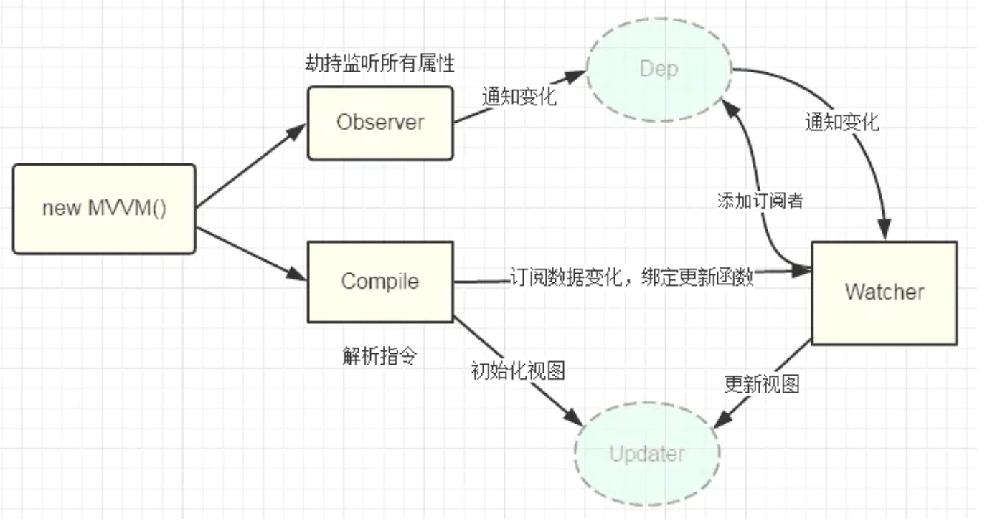

1. MVVM

2. Vue双向绑定
- 数据监听器 Observer，对数据对象的所有属性进行监听，如有变动获取到最新值并通知订阅者
- 指令解析器 Compile，对每个元素节点的指令进行扫描解析，根据指令模板替换数据，以及绑定相应的更新函数
- Watcher 作为连接 Observer 和 Compile 的桥梁，订阅并接收每个属性变动的通知，执行指令绑定的相应回调函数，从而更新视图
- MVVM入口函数，整合Observer和Compile

当 Vue 进入初始化阶段时，一方面 Vue 会深度遍历 data 中的属性，并用 Object.defineProperty 转化成getter/setter 的形式，实现数据劫持；另一方面Vue 的指令编译器 Compile 对元素节点的各个指令进行解析，初始化视图，并订阅 Watcher 来更新视图，此时 Watcher 将添加到消息订阅器 Dep 中，此时初始化完毕。
当数据发生变化时，触发 Observer 中 setter 方法，立即调用 Dep.notify()遍历所有的订阅者，并调用其 update 方法，然后通过 diff 算法，patch 相应的更新完成对订阅者视图的改变。